WebVR
Brought to you by
Who am I?
What do I do?
- VR / AR
- Touchscreens
- Mobile Apps / Games
- Backend Services
- 3D Printing / Electronics
- Arduino / Raspberry Pi
Tools

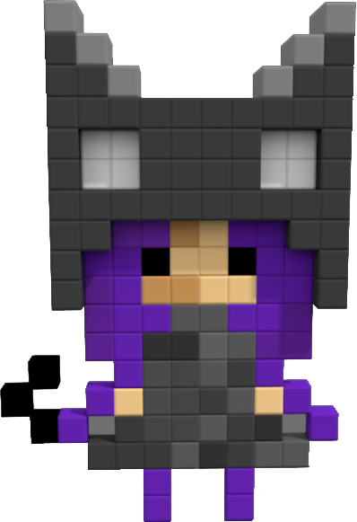
 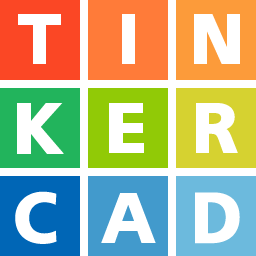
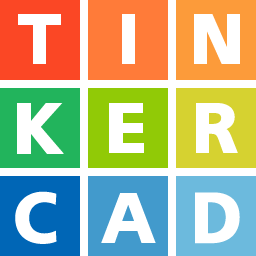
Who are we?
- Started in 2006
- Auckland-based digital agency
- New York presence
Our Work
- Mobile Apps
- Websites
- Games
- Experiences
NZ Olympics App
NZ Olympics App
with ANZ
- 3 mth timeline
- / / Cordova
- News feed
- 360° WebGL starscape
NZ Olympics App
with ANZ
Enabled a two-way conversation between Kiwi Olympians and everyday New Zealanders via augmented reality stars in the night sky.
NZ Olympics App
with ANZ
V Prize Dive
V Prize Dive
V Prize Dive
- Intensive Prototyping
- Beautiful 3D Objects
- Browser Based
- HUD Controls
- Arcade Sounds
- Competition Engine
V Prize Dive
WebVR
History
Now
- Firefox Nightly
- Microsoft Edge
- Chromium
- Servo
- Chrome for Android
- Samsung Internet
- Oculus Carmel
- JS polyfill for others
Today's Hardware
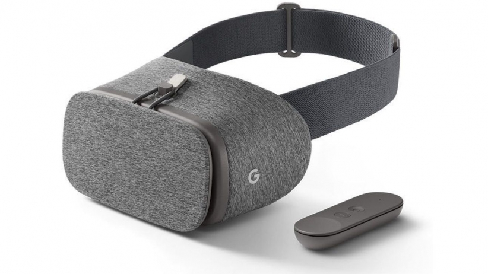 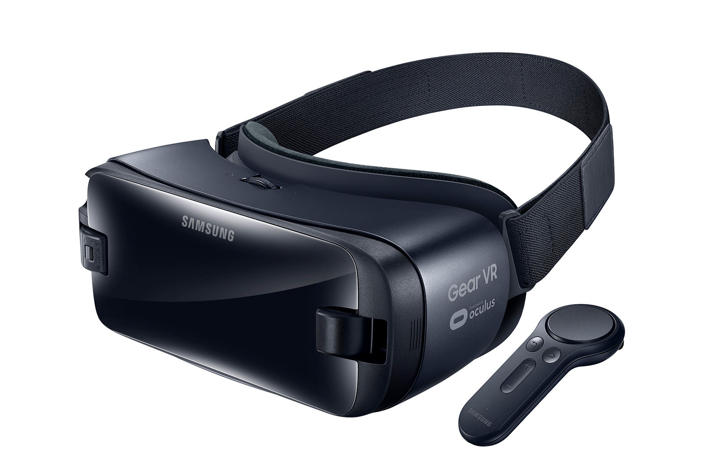 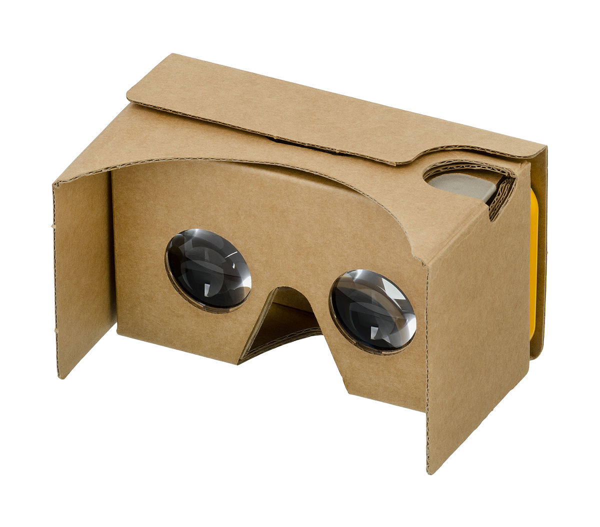
 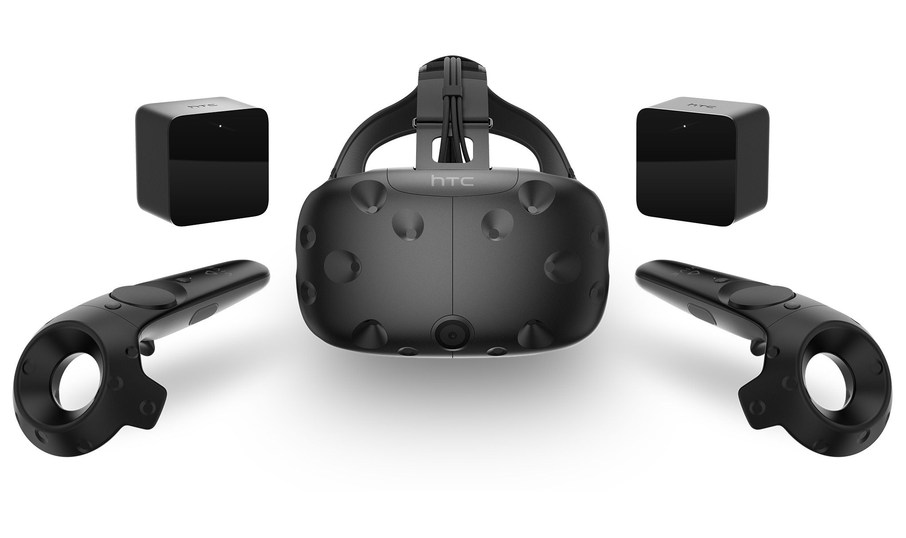
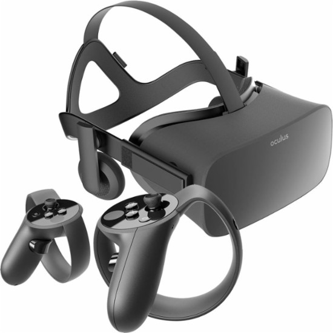
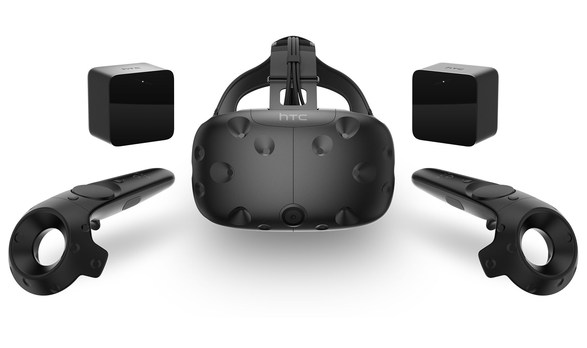
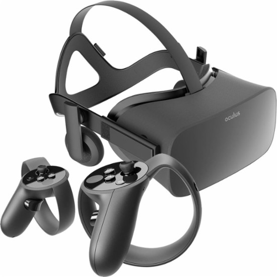
Projects Today
- 360 Degree Video
- Architecture
- Real Estate
- Training
- E-Commerce
- Installations
- Social VR / AR
- Expo Booths
- Light Experiences
360 Degree Video
Architecture
Real Estate
Training
E-Commerce
Installations
Social VR / AR
Expo Booths
Light Experiences
Future Hardware
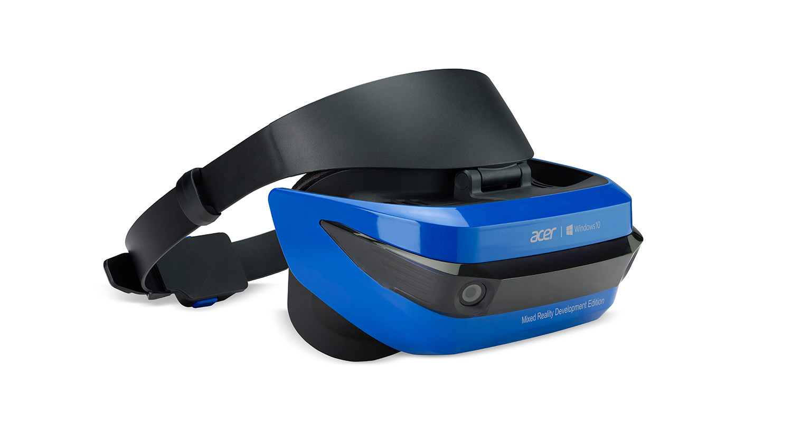 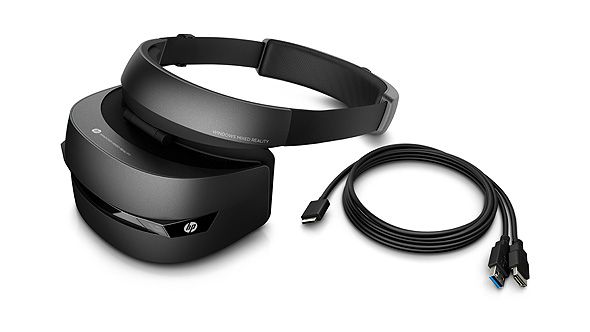
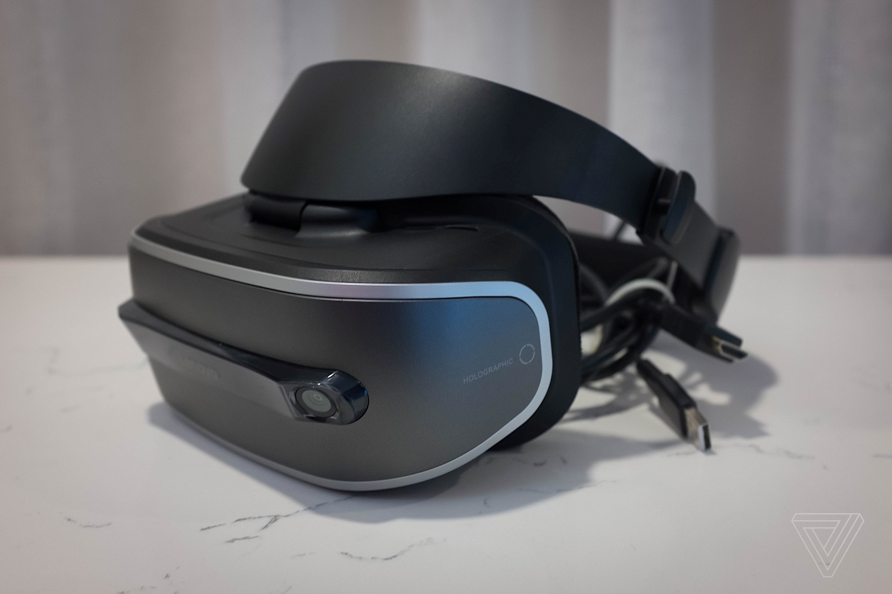 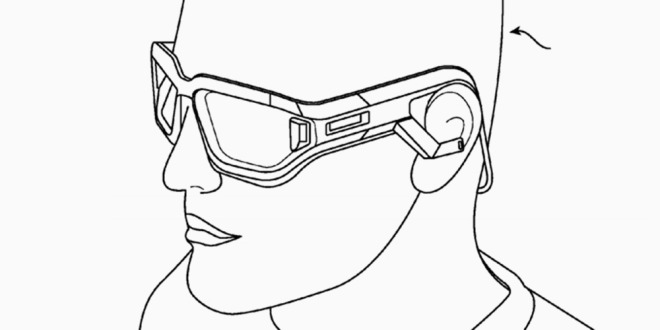
Projects Tomorrow
- Mobile Gaming
- Premium Experiences
- Navigation
- AI in VR / AR
- Telepresence
Mobile Gaming
Premium Experiences
Navigation
AI in VR / VR
Telepresence
A-Frame
A WebVR framework by our friends at Mozilla
Features
- HTML Markup and JS for VR content in browser
- Leverages existing web workflows and tools
- Uses THREE.js under the hood
- Unity-like framework
- Easy to use inspector / debug tools
Support
- WebGL / WebVR
- Desktop to mobile responsive interface
- HTML5 positional audio
- 2D and 3D Animation
- HTC Vive and Oculus Controllers
- Fully exposes Three.js features
Components
- Physics
- 3D Text
- 360 Degree
- Hand Tracking
- Shaders
- Motion Capture
- Real-time Shadows
- Particles
- Multiplayer
- Animation
- OBJ, DAE, PLY support
- DRC, GLTF support
Primitives
3D Text
360 Degree Photos
Animated Models
Path Animation
Water & Particles
Physics
Realtime Shadows
Touch Controls
A-Frame Examples
Musical Forest
/ /
Saturday Night
/ /
NYC Snowglobe
/ /
Bow Demo
Minecraft Demo
Controls: WSAD keys to move, click to place blocks.
: /
/ / [Mirror]
(: only)
Workshop
UX in VR
- Locomotion
- Object interaction
- Leading the user
- Golden rules
Locomotion
- Limited input methods
- Google Cardboard 1-button
- Google Daydream Controller
- Gamepad
- Keyboard & Mouse
- Oculus / Vive Controls
Locomotion
Cursor Controls
- Gaze or button based interaction
- Optimal fuze time needed
- Works on desktop / mobile
Locomotion
Gaze Cursor Controls Example
[Other example]
Locomotion
Hand Controls
- Precision Controls
- Manipulation & Navigation
- Desktop Only
Locomotion
Teleport Navigation Example
Object Interaction
- Cursor
- Hand Controls
Object Interaction
Standard Cursor Example
Object Interaction
Crawling Cursor Example
Object Interaction
Hand Controls Example
Leading the User
- Audio Cues
- Visual Cues
- Non Player Characters
Audio Cues
Direct Communication
Audio Cues
Indirect Communication
Audio Cues
Environmental / Ambient
Audio Cues
Adaptive Music
Audio Cues
Visual Cues
Object Color
Visual Cues
Lighting
Visual Cues
Responsiveness & Indication
Visual Cues
Golden Rules
Several rules for providing the best experience without causing nausea / disorientation.
Do's
- User retains control always
- Physics shouldn't affect user
- Viewport should remain clear
- Use first person model
- Represent physical controllers 1:1
Dont's
- Shake the camera
- Rapidly spin the user
- Place objects too close to face
- Use arms on player model
Golden Rules
- Guidelines, rather than actual rules
- Check your assumptions
- Test on actual people!
Practical
Welcome to A-Frame School